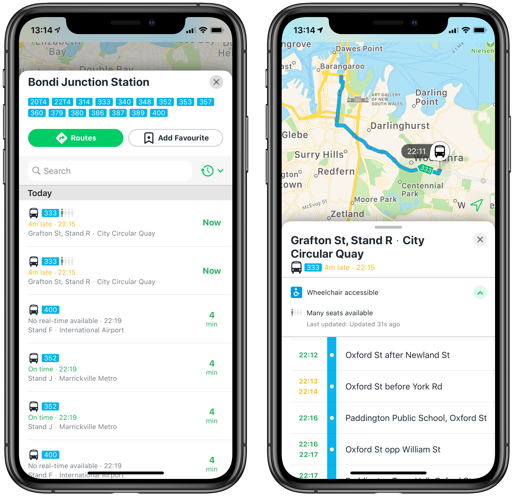
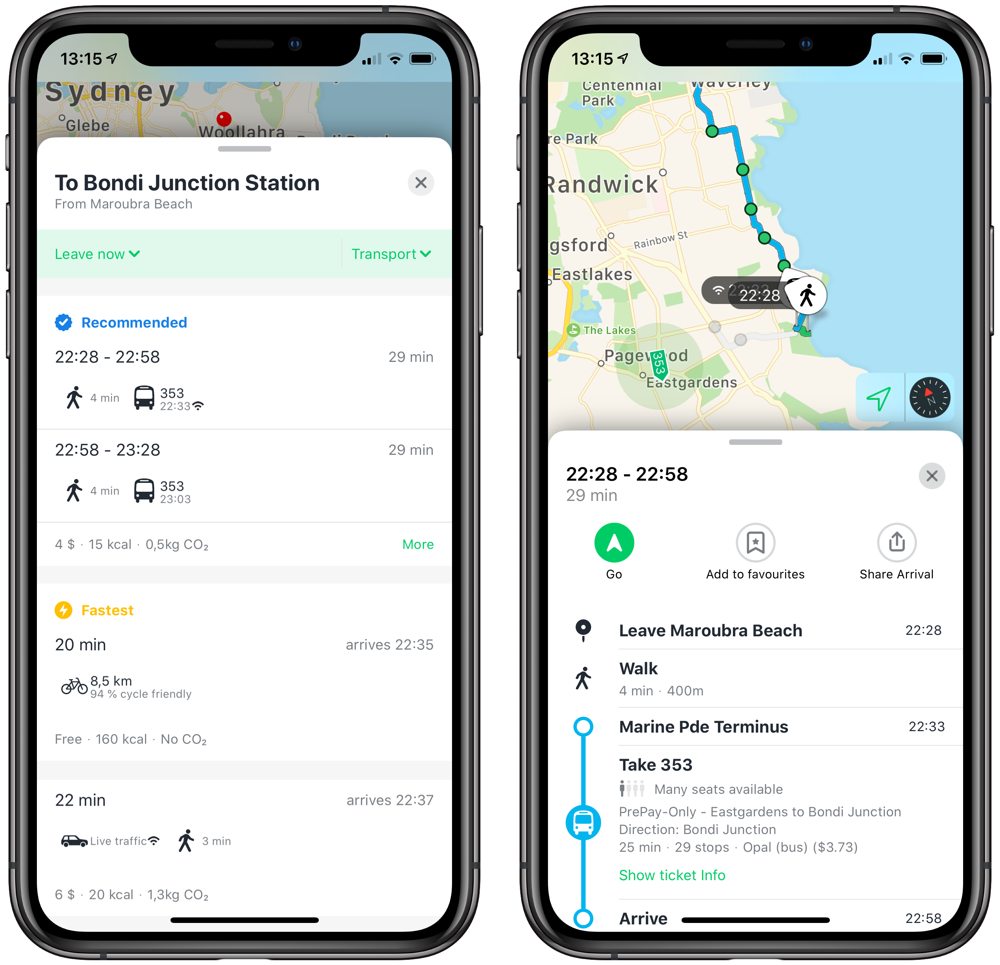
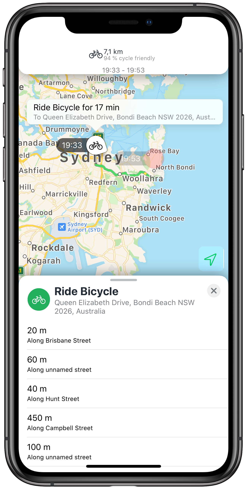
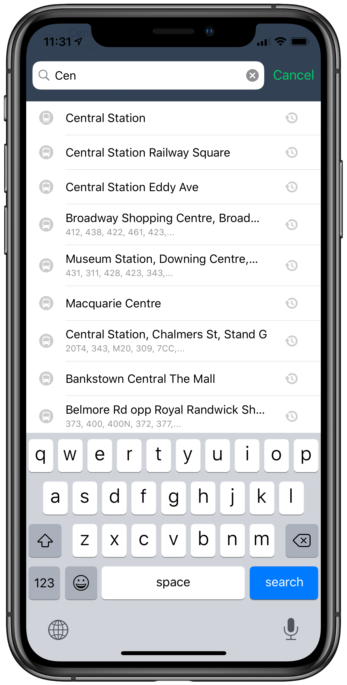

View Controllers of TripKitUI
TripKitUI provides customisable view controllers for the following high-level features:
- Trip planning for showing and comparing the different ways of getting from A-to-B, including details screens for each trip both as an overview of the whole trip or the steps of each trip on a mode-by-mode basis.
- Public transport departures for a specific stop or station with real-time information, including a details screen for each service that shows the route on the map and in a list.
- Location search including autocompletion for searching by addresses, public transport POIs, or your own data sources.
- Customisable home screen which ties all of these together, and let's you add additional custom components
Each of these share the following characteristics:
- Customisation points for colours and fonts
- VoiceOver accessible
- Translated into the following languages: Arabic, Chinese (Simplified + Traditional), Danish, Dutch, English, Finnish, French, German, Italian, Japanese, Korean, Norwegian (Bokmål), Portuguese, Spanish and Swedish
- Compatible with iPhone and iPad
- Compatible with iOS 13+
- Compatible with Apple's MapKit out of the box, but can also use other map UI layers, such as Google, HERE or OpenStreetMap
- Source code available
Real-time departures and service details

The stand-alone view controller TKUITimetableViewController let's you quickly and easily embed public transport departures.
This view controller has the following features:
- Show departures for an individual stop or larger station
- Real-time information where available, including real-time departure and arrival times, service disruptions and crowdedness of individual services.
- Optionally with wheelchair accessibility information
- Let users set the time of the first departure time
- Show details of each service
- Route on the map
- List of stops including arrival and departure time at each stop
- Real-time vehicle location where available
It has the following additional customisation points:
- Style of cards via
TKUICustomization - Timetable screen via
TKUITimetableCard.config: - Customisable list of action buttons
Note: As an alternative to using the stand-alone view controller, you can also take the individual card components (TKUITimetableCard and TKUIServiceCard) and use them directly in a TGCardViewController container.
Trip planning and trip details

The stand-alone view controller TKUIRoutingResultsViewController let's you quickly and easily show routing results between two locations for various modes including combinations of those modes, i.e., this is fully multi-modal and inter-modal.
This view controller has the following features:
- Show routing results to a specified location from the user's current location, or between specified locations
- High-level comparison of trips, showing durations, cost, carbon emissions, and calories burnt
- Real-time information, including departure times, traffic, service disruptions, pricing quotes, ETAs
- Let users select what modes should be included
- Let users set the time to depart or the time to arrive
- Show details for each trip as an overview
It has the following additional customisation points:
- Style of cards via
TKUICustomization - Results screen via
TKUIRoutingResultsCard.config:- Option to provide a feedback action when user presses a "Contact support" button in case of an error or trying to route in an area that's not supported
- Trip overview via
TKUITripOverviewCard.config:- Presentation of attribution
- Custom callback for what to do when tapping a segment
- Customisable list of per-trip action buttons
- Customisable list of per-segment action buttons
Note: As an alternative to using the stand-alone view controller, you can also take the individual card components (TKUIRoutingResultsCard and TKUITripOverviewCard) and use them directly in a TGCardViewController container.
Trip mode-by-mode overview

The stand-alone view controller TKUITripModeByModeViewController let's you display details of a trip on a mode-by-mode (or segment-by-segment) basis.
This view controller has the following features:
- Show details for a trip on a mode-by-mode basis
- Highly customisable what cards to display for each mode, including custom cards or also the built-in cards like
TKUITimetableCardorTKUIServiceCardfrom above
It has the following additional customisation points:
- Style of cards via
TKUICustomization - Trip mode-by-mode cards view
TKUITripModeByModeCard.config: - What cards to display for each segment
Note: As an alternative to using the stand-alone view controller, you can also take the individual card components (TKUITripModeByModeCard, as well as the per-segment cards) and use them directly in a TGCardViewController container. This for example allows to show these mode-by-mode details when a user selects a segment on a trip card (see TKUITripOverviewCard).
Location search

The TKUIAutocompletionViewController can be used with the standard UISearchController to provide autocompletion results for addresses, POIs and custom data sources.
The following data sources are included in TripKit:
TKTripGoGeocoderfor public transport stops and stationsTKAppleGeocoderfor addresses and POIs provided by Apple MapsTKPeliasGeocoderfor use with any Pelias-powered geocoderTKCalendarManagerfor searching the user's calendar for events with locationsTKContactsManagerfor searching the user's contacts for locations
Home screen
The TKUIHomeViewController can be used as a start-screen for the trip planning, timetable and search components -- while being highly customisable to add arbitrary other features.
The built-in functionality is a search bar at the top, which uses the same search functionality as the dedicated TKUIAutocompletionViewController but with the search integrated in the home screen UI, along with a directions button to bring up the TKUIRoutingQueryInputCard.
The purpose of the home screen is then to add individual components, to give users quick access to different section. How to build these, is up to you, but they can be things like:
- The user's favourites
- Recently searched locations
- Nearby locations
- Access to the user's booked trips
- Access to the user's tickets
The TripKitUIExample shows to do some of these.